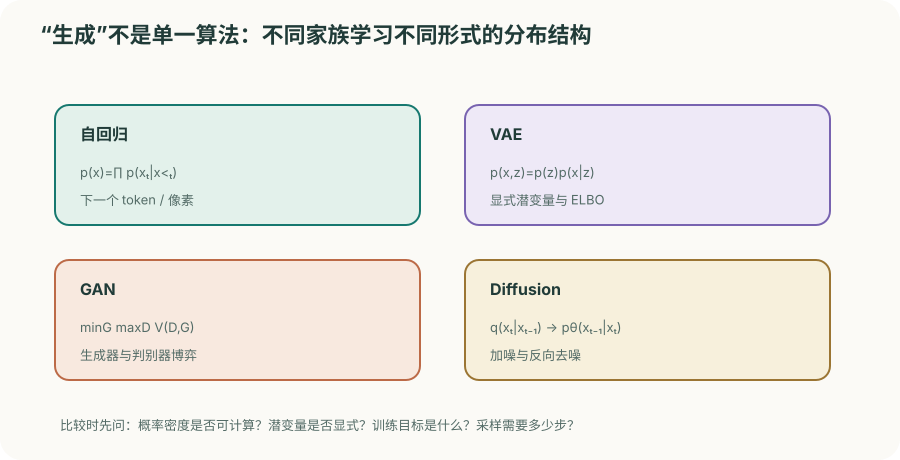
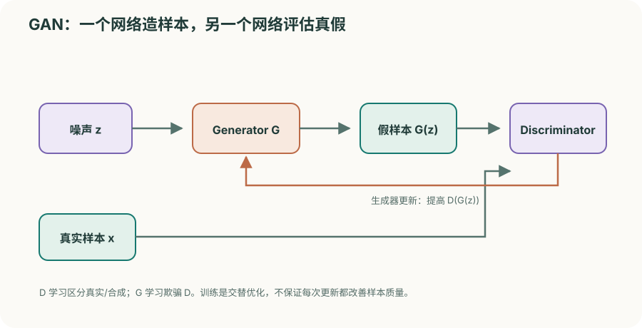
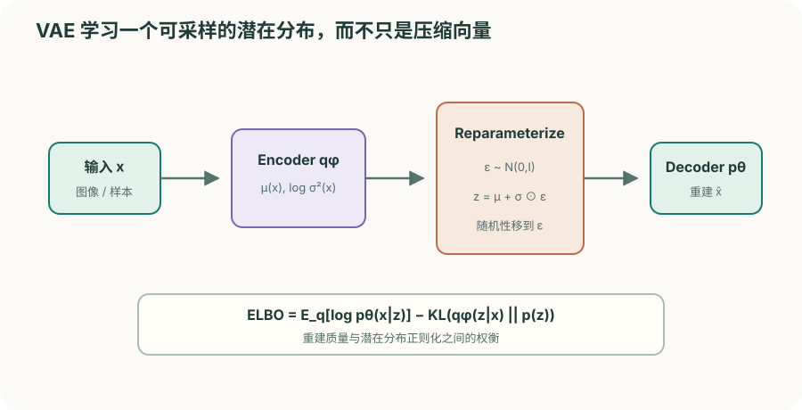
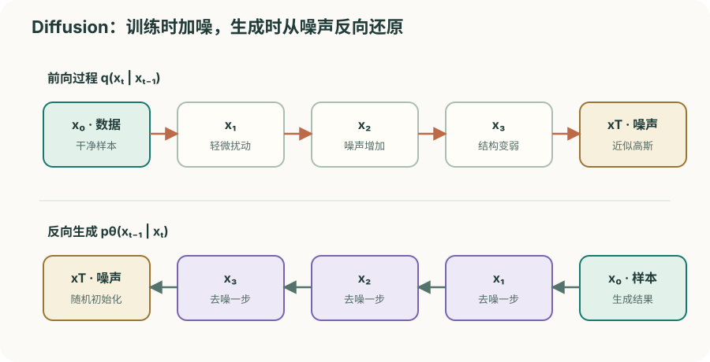

生成式模型：GAN、VAE、Diffusion 与自回归采样
生成模型试图学习数据分布并产生新样本。GAN 通过对抗博弈学习隐式分布，VAE 优化潜变量模型的变分下界，Diffusion 学习逐步去噪，自回归模型按条件概率逐步生成 token。
01 · 生成建模：学习分布而非标签
判别式任务通常关注 P(y|x)：给定输入预测标签。生成式建模则试图描述数据本身的分布，例如 P(x) 或联合分布 P(x,z)，从而可以采样出新样本。这个目标不意味着每个生成样本都真实、正确或有用；“看起来合理”也不等于事实可靠。

比较生成模型时，先问四件事：概率密度是否显式可计算？是否引入潜变量？训练目标是似然、变分下界还是对抗目标？生成一次样本需要几步、多少显存和多少采样计算？
02 · 自回归模型：链式法则与采样
自回归模型使用概率链式法则分解联合分布。文本生成中，每一步根据已经生成的前缀预测下一个 token；训练通常用 teacher forcing，把真实前缀送入模型。
温度 T 对 logits 除以 T 后再 softmax：低温度使分布更尖锐，高温度使其更平坦。Top-k 保留概率最高的 k 个候选；top-p 保留累计概率达到阈值的一组候选。它们是解码策略，不会改变模型学到的条件分布本身，也不保证输出质量单调提升。
import torch
def top_p_sample(logits, p=0.9, temperature=1.0):
if temperature <= 0:
raise ValueError("temperature must be positive")
probs = torch.softmax(logits / temperature, dim=-1)
sorted_probs, sorted_ids = torch.sort(probs, descending=True)
cumulative = sorted_probs.cumsum(dim=-1)
remove = cumulative - sorted_probs >= p # 保留跨过阈值的那个 token
sorted_probs = sorted_probs.masked_fill(remove, 0.0)
filtered = torch.zeros_like(probs).scatter_(0, sorted_ids, sorted_probs)
filtered = filtered / filtered.sum()
return torch.multinomial(filtered, num_samples=1)
logits = torch.tensor([2.0, 1.3, 0.4, -0.5])
torch.manual_seed(24)
sample = top_p_sample(logits, p=0.85, temperature=0.8)
print("sampled token id:", sample.item())03 · GAN：生成器与判别器的对抗目标
GAN 同时训练生成器 G 和判别器 D。G 把随机噪声 z 映射为样本；D 估计样本来自真实数据还是生成器。原始 minimax 目标是：

实际训练常用非饱和生成器损失 −E[log D(G(z))]，以改善早期梯度。GAN 的训练是一个耦合优化问题，学习率、模型容量和更新频率会相互影响；模式坍塌意味着生成器只覆盖数据分布的一部分。不能简单地说判别器越强越好，也不能保证训练一定达到理论纳什均衡。
import torch
from torch import nn
G = nn.Sequential(nn.Linear(5, 16), nn.ReLU(), nn.Linear(16, 1))
D = nn.Sequential(nn.Linear(1, 16), nn.ReLU(), nn.Linear(16, 1))
opt_g = torch.optim.Adam(G.parameters(), lr=1e-3)
opt_d = torch.optim.Adam(D.parameters(), lr=1e-3)
criterion = nn.BCEWithLogitsLoss()
real = torch.randn(32, 1) * 0.8 + 2.0
z = torch.randn(32, 5)
fake = G(z).detach()
d_loss = criterion(D(real), torch.ones(32, 1)) + criterion(D(fake), torch.zeros(32, 1))
opt_d.zero_grad(); d_loss.backward(); opt_d.step()
for parameter in D.parameters():
parameter.requires_grad_(False)
z = torch.randn(32, 5)
g_loss = criterion(D(G(z)), torch.ones(32, 1))
opt_g.zero_grad(); g_loss.backward(); opt_g.step()
for parameter in D.parameters():
parameter.requires_grad_(True)
print("D loss:", round(d_loss.item(), 4), "G loss:", round(g_loss.item(), 4))04 · VAE：潜在分布与变分下界
VAE 假设数据由潜变量 z 生成：先从先验 p(z) 采样，再从条件分布 pθ(x|z) 生成样本。真实后验 pθ(z|x) 通常难以直接计算，编码器用 qφ(z|x) 近似。训练最大化 ELBO：

若 qφ(z|x)=N(μ,σ²)，可用 z=μ+σ⊙ε、ε∼N(0,I) 重参数化。重建项衡量样本重建质量；KL 项把近似后验拉向先验，使潜空间更可采样。KL 权重过大可能导致 posterior collapse；β-VAE 改变了重建与正则项的权衡，不是“免费提高 disentanglement”。
import torch
from torch import nn
import torch.nn.functional as F
batch, input_dim, latent_dim = 8, 20, 5
x = torch.rand(batch, input_dim)
encoder = nn.Linear(input_dim, 2 * latent_dim)
decoder = nn.Linear(latent_dim, input_dim)
mu, logvar = encoder(x).chunk(2, dim=-1)
std = torch.exp(0.5 * logvar)
z = mu + std * torch.randn_like(std)
reconstruction_logits = decoder(z)
reconstruction = F.binary_cross_entropy_with_logits(reconstruction_logits, x, reduction="none").sum(-1).mean()
kl = -0.5 * (1 + logvar - mu.square() - logvar.exp()).sum(-1).mean()
loss = reconstruction + kl
loss.backward()
assert torch.isfinite(loss) and tuple(z.shape) == (batch, latent_dim)
print("reconstruction:", round(reconstruction.item(), 3), "KL:", round(kl.item(), 3))05 · Diffusion：逐步加噪与学习反向过程
DDPM 定义一个固定的前向马尔可夫链，逐步向数据添加高斯噪声；神经网络学习反向条件分布，从噪声逐步恢复样本。令 αt=1−βt、ᾱt=∏s≤t αs，可以直接从 x₀ 采样任意时间步：

常见训练目标让网络根据 x_t 与时间步 t 预测加入的噪声 ε，并最小化噪声预测误差。反向采样时，模型每一步估计去噪方向并结合噪声日程更新样本。Latent Diffusion 先把图像编码到较低分辨率潜空间，再在那里执行扩散，以降低高分辨率像素空间的计算成本；代价是结果受潜空间编码器表达能力约束。
import torch
steps = 100
betas = torch.linspace(1e-4, 0.02, steps)
alphas = 1.0 - betas
alpha_bar = torch.cumprod(alphas, dim=0)
x0 = torch.randn(4, 3, 16, 16)
noise = torch.randn_like(x0)
t = torch.tensor([0, 9, 49, 99])
a_bar = alpha_bar[t].view(-1, 1, 1, 1)
xt = a_bar.sqrt() * x0 + (1.0 - a_bar).sqrt() * noise
assert xt.shape == x0.shape and torch.isfinite(xt).all()
print("noisy batch:", tuple(xt.shape), "alpha_bar:", a_bar.flatten().round(decimals=4).tolist())06 · 生成模型的评估与选择
生成模型不能只用训练 loss 评价。需要同时检查样本质量、多样性、覆盖度、条件遵循、分布外行为、延迟和资源成本。FID 等分布级指标依赖特征提取器和样本集，不能完整代表人类感知质量；单张“好看”的样本也不能证明模型覆盖了真实数据分布。
| 需求 | 常见路线 | 重点风险 |
|---|---|---|
| 长文本与代码续写 | 自回归 Transformer | 事实性、解码偏差、长上下文成本 |
| 可控潜变量与压缩表示 | VAE 及变体 | 重建模糊、后验坍塌、先验错配 |
| 高保真隐式生成 | GAN 及对抗变体 | 模式坍塌、训练不稳定、覆盖率 |
| 高质量条件图像生成 | Diffusion / Latent Diffusion | 采样步数、条件控制、推理成本 |
“扩散模型已经全面取代 GAN”或“某类模型永远最好”都过于绝对。不同数据、约束和生成任务的最优折中不同；工程选择要通过目标数据上的对照实验确认。
来源、实现版本与适用边界
论文用于核对算法定义与历史主张；官方文档用于核对 API 行为。图中的张量和数值若未明确引用论文实验，均为构造的教学示例，不代表 benchmark 或生产效果。
- Goodfellow et al. (2014), Generative Adversarial Nets
- Kingma & Welling (2013/2014), Auto-Encoding Variational Bayes
- Ho, Jain & Abbeel (2020), Denoising Diffusion Probabilistic Models
- Rombach et al. (2022), High-Resolution Image Synthesis with Latent Diffusion Models
- Radford et al. (2019), Language Models are Unsupervised Multitask Learners (GPT-2)